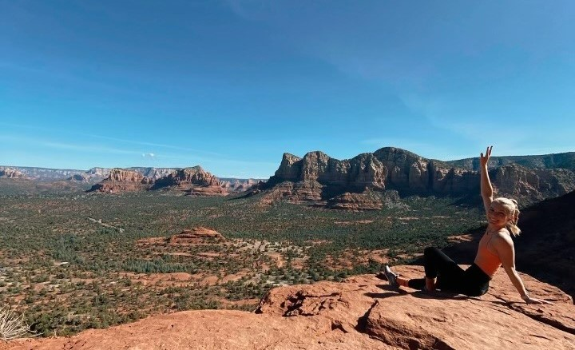

Here's a little about me
- I am an enthusiastic and dynamic front-end developer with an appetite for learning.
- I pride myself on being a lifelong learner, dedicating myself to mastering a craft or concept before diving into the next one.
- I'm an avid traveler and am currently emabarking on the digital nomad lifestyle
